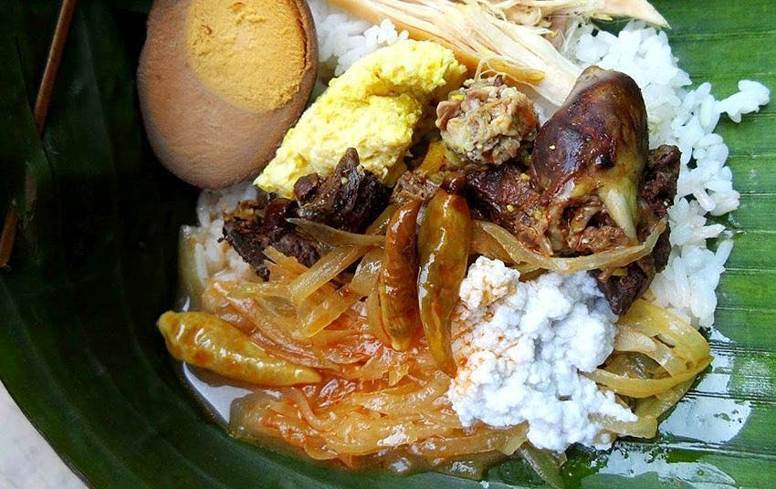
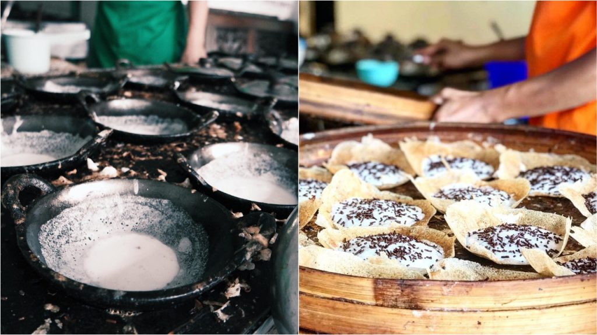
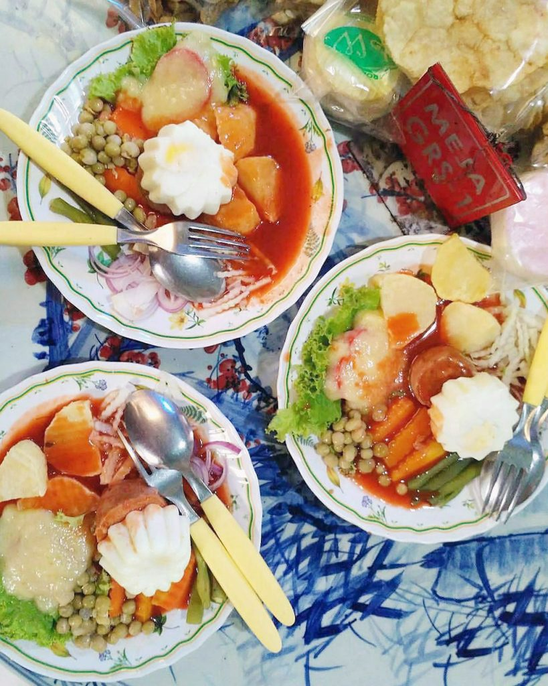
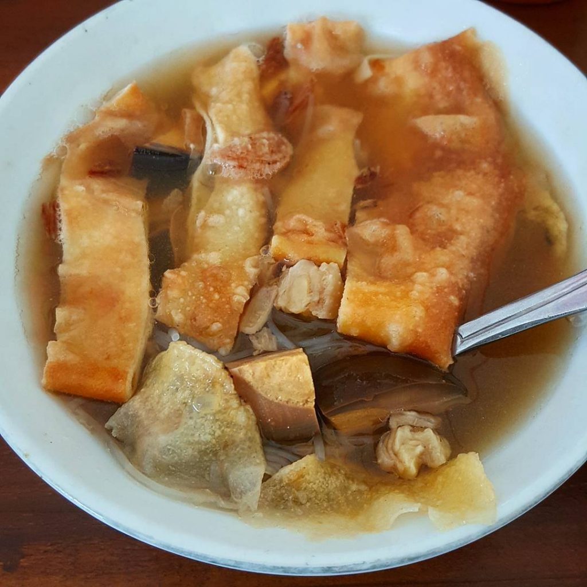
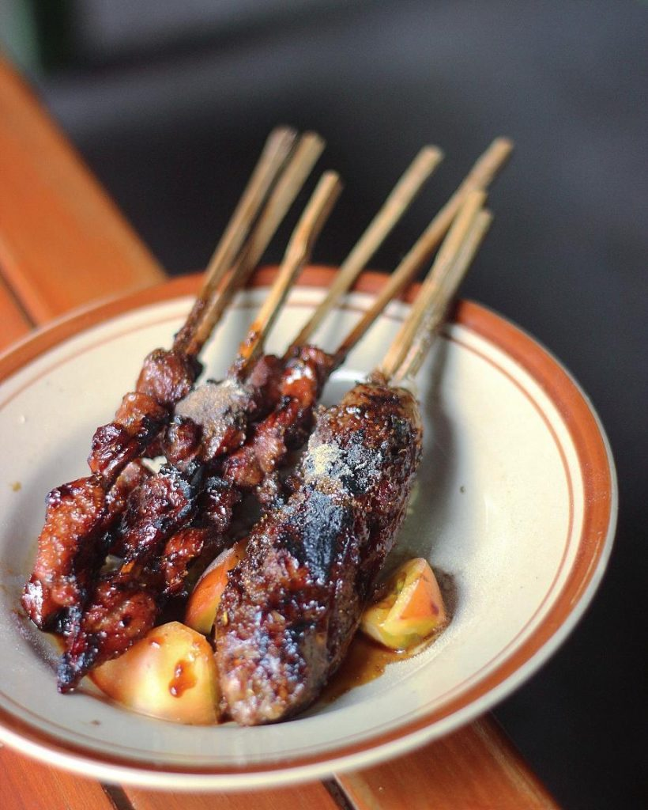

Mencicipi makanan khas Solo adalah daya tarik utama dan salah satu aktivitas wajib yang harus kamu lakukan
saat liburan ke Kota Batik ini.
Variatifnya makanan khas Solo ini seakan menutupi minimnya spot wisata asyik di kota, yang juga kerap disebut
sebagai Surakarta itu. Ya, di Solo, destinasi wisata yang ditawarkan tidak semenarik seperti di Yogyakarta,
Semarang dan bahkan Klaten dan Karanganyar sekalipun, yang merupakan ‘kota tetangga’ dari Solo.
1. Nasi Liwet

Makanan khas Solo yang satu ini memiliki reputasinya tersendiri. Nasi putih yang disajikan dalam
pincuk daun pisang bersama dengan sayur labu siam, suwiran ayam dan telur rebus ditambah sedikit
santan kental gurih yang disebut areh ini akan membawa kamu ke dunia yang berbeda.
Salah satu penyaji nasi liwet yang ikonik di Kota Solo adalah Nasi Liwet Wongso
Lemu. Harganya memang sedikit lebih mahal dibandingkan penjual nasi liwet Solo lainnya,
namun rasanya memang memiliki ciri khas tersendiri.
2. Serabi

Serabi memang sudah membuka cabang di seluruh Indonesia, tapi jika kamu ingin mencoba yang asli,
silakan langsung mampir ke Solo.
Serabi Notosuman sudah melayani pelanggannya sejak 1920-an, dan mereka sukses
bertahan karena mempertahankan cita rasanya yang manis, lembut dengan santan yang terasa kuat di
mulut. Jika membelinya langsung di Notosuman, kamu juga bisa mendapat bonus melihat langsung
pembuatan serabi dengan teknik yang menjaga kearifan lokal. Oh iya, untuk mendapatkannya, kamu harus
mengantri karena peminatnya sangat banyak. Yang sabar, ya!
3. Selat Solo

Selat Solo adalah hidangan khas Jawa dengan pengaruh dari Eropa dan merupakan
makanan khas Solo. Untuk menikmatinya, kamu bisa menuju ke Warung Selat Mbak Lies.
Lokasinya tersembunyi dan interior warungnya juga unik. Bayangkan rasa yang kamu dapat kala menikmati
seporsi sup lengkap dengan wortel, tomat dan buncis, ditambah acar bawang goreng, potongan kentang
goreng, irisan telur pindang dan sayur mayones, plus potongan daging bistik. Penasaran seperti apa
rasanya, well, kamu harus mencobanya langsung.
4. Timlo

Makan timlo di Solo adalah keharusan. Untuk mendapatkan yang terbaik, silakan berkunjung ke
Warung Timlo Solo Sastro di wilayah Pasar Gede. Kuliner soto dengan citarasa sup
ini menawarkan kesegaran dalam setiap suapan.
Untuk mendapatkan kesan mendalam, materi soto di dalamnya harus kamu cicipi, seperti mie soun,
suwiran ayam, potongan sosis Solo, wortel dan irisan telur masak kecap. Tambahkan irisan hati ayam
dan telur dadar untuk melengkapi hidangan sebelum kemudian disiram kuah kaldu panas yang
menyegarkan. Dengan ditambah bawang goreng sebagai penambah rasa, timlo Solo bakal memuaskan nafsu
makan kamu.
5. Sate Buntel

Konon kabarnya presiden kedua Indonesia, Soeharto, sangat menyukai hidangan ini. Bapak Joko Widodo
pun juga termasuk salah satu penggemarnya. Jika dua orang paling berpengaruh di tanah air itu saja
menyukainya, mengapa kamu tidak mencobanya.
Sate yang terbuat dari daging kambing cacah yang kemudian dibungkus dengan lapisan lemak tipis dan
kemudian dibakar, memang memberikan nuansa tersendiri bagi penikmatnya. Lemak pembungkus yang
terbakar menambah aroma, yang mengundang kamu untuk segera menikmatinya. Dengan bumbu kecap, irisan
bawang merah dan daun kol, serta jeruk nipis dan cabai rawit sebagai tambahan, kamu akan mengetahui
alasan mengapa Soeharto dan pak Jokowi begitu menyukai Sate Buntel ini.
Nikmati lezatnya sate buntel di Sate Buntel Mbok Galak kalau sedang berkunjung ke
Solo!